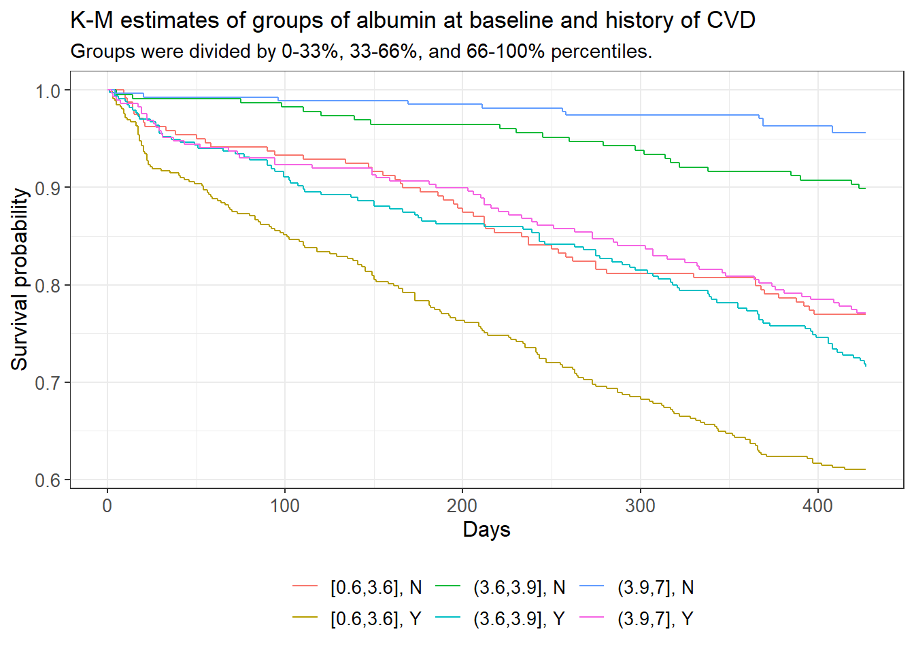
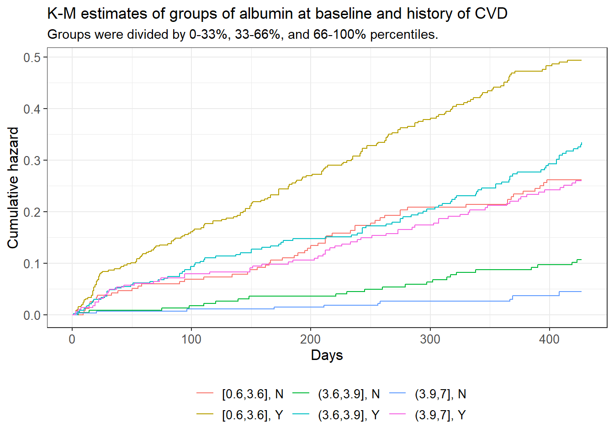
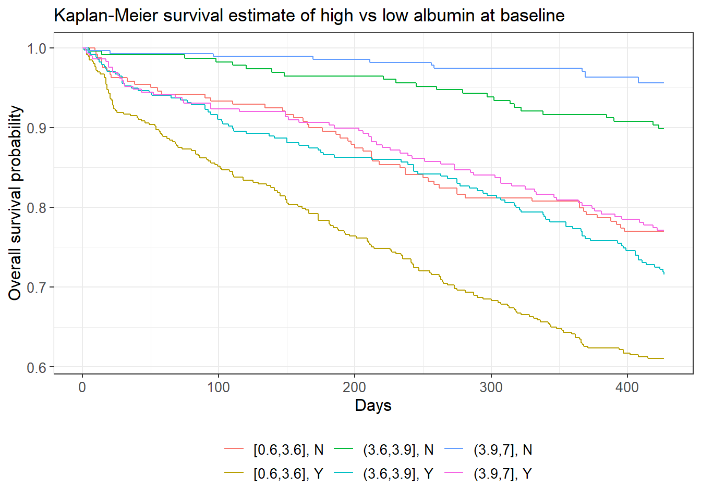
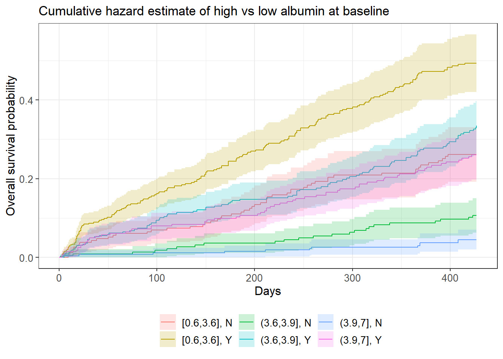

In this study, we looked at data from 1979 hemodialysis patients in order to determine the risk factors for end-stage renal disease (ESRD), a condition which affects more than 850,000 individuals in the United States alone. Serum albumin, a blood protein which contributes to calcium levels in plasma, was recorded both at their entry into the study and at several follow-up periods throughout their time in their study. The model in which we treated albumin as static based on the subject’s albumin level at the time of their entry into the study gave a coefficient estimate for albumin as \(\exp(\hat \beta_1) \approx 0.649\) (95% CI: \([0.530, 0.818]\), p-value: \(\approx 0.00016\)). The model in which we also treated albumin as static based on its value at baseline, but included along with it an interaction term based on the subject’s history of cardiovascular disease (or lack thereof), gave a coefficient estimate for albumin as \(\exp(\hat \beta_1) \approx 0.491\) (95% CI: \([0.329, 0.732]\), p-value: \(0.0005\)), and a coefficient estimate for the interaction term as \(\exp(\hat \beta_9) \approx 1.540\) (95% CI: \([0.964, 2.459]\), p-value: \(\approx 0.071\)). The model in which we treated albumin as a time-varying covariate based on the subject’s albumin levels as recorded throughout their time in the study (with no interaction), gave a coefficient estimate for albumin as \(\exp(\hat \beta_1) \approx 0.549\) (95% CI: \([0.485, 0.626]\), p-value: \(\approx 0\)). Finally, the model in which we treated album as a time-varying covariate as well as included an interaction term gave the respective estimates as \(\exp( \hat \beta_1) \approx 0.369\) (95% CI: \([0.290, 0.469]\)) for albumin, and \(\exp (\hat \beta_9) \approx 1.738\) (95% CI: \([1.316, 2.295]\)) for the interaction term. All models included race, whether the subject appeared undernourished, cholesterol, age, and diabetes as predictor variables, while treating body mass index and smoking history as confounding variables.
End stage renal disease (ESRD) is a dangerous condition in which an individual’s kidneys no longer adequately perform their function of filtering out toxins, and affects over 850 thousand individuals in the US alone. While most individuals who suffer from ESRD would ideally like to receive a kidney transplant, the other option is hemodialysis, which effectively performs the same function as one’s kidneys.
In the past it has been posited that protein biomarkers such as serum albumin may have an association with risk of death amongst hemodialysis patients, as human serum albumin is crucial in maintaining body nutrition, as it regulates the fluid exchange between various body parts, including blood circulation to the kidneys (Ha 2013). It also plays a role in metabolism. As such, it stands to reason that a lack of serum albumin would be linked with mortality among hemodialysis patients, whose kidneys are performing under below standards of healthiness.
To test this hypothesis formally, this study was conducted based off of a sample of N = 1979 hemodialysis patients across the US who had undergone dialysis in December 2014. For all patients, serum albumin levels were recorded at the time of entry into the study, along with other demographic records including age, race, gender, body mass index (BMI), smoking history, a subjective assessment of nutritional status. Laboratory measurements on cholesterol, serum triglyceride, and post-dialysis systolic blood pressure measurements were also included. Serum albumin levels were also recorded repeatedly over time throughout the study, with records spaced between 1 to 2 months apart.
Our data consists of 1979 hemodialysis patients who were undergoing dialysis in December 2014 in dialysis clinics across the US. These patients’ respective demographics vary across gender, race, as well as health history including body mass index (BMI), smoking history, history of cardiovascular disease (CVD), and diabetes. Measurements of nutritional status, such as levels of cholesterol, serum albumin, serum triglycerides, and post-dialysis systolic blood pressure were also recorded. Albumin, itself known to be a measure of healthiness on account of its role in filtering toxins from the body, was recorded consistently at periods between one to two months apart from one another, starting at the subject’s entry into the study. Other variables recorded were a measure of the amount of time the subject had been affected by ESRD before entering the study, as well as an indicator for whether the study nurse noted the subject in question appeared undernourished at the time of data collection.
While the sampling scheme is relatively sound in that we have a large random sample, one of the shortcoming of the study design is that there are also a large amount of missing records for certain variables, particularly serum triglycerides, which was missing in over 20% of records. It’s also notable that we do not have clear information on the exact dates between albumin measurements, so we cannot state conclusively that two different subjects with similar serum albumin levels two time periods after baseline had the same amount of time between collections.
There are a number of ties–moments in time where more than one individual died–in the data. The method we used to account for this when fitting the model is the Efron approximation. A variety of different methodologies exist to deal with ties in survival analysis, but the Efron approximation offers a solid middle ground between the average partial likelihood and the decidedly inaccurate Breslow approximation, by weighting the partial likelihood by taking the average weight of the failures at time \(t_j\).
Confounding variables, or confounders, are variables which are causally associated with the predictor of interest and causally associated to the outcome of interest. Failing to account for confounders results in biased analyses and potentially misleading results. We tested formally for confounding variables first by following known causal pathways e.g. being overweight/obese is a risk factor for diabetes, so we suspected high BMI to be causally related to diabetes, knowing both are a risk factor for death. Then we conducted log-rank tests and Chi-squared tests for independence, establishing relationships between the outcome (death) and the predictor in question.
We know a priori that smoking is associated with diabetes, which itself is associated with a higher risk of mortality. Nicotine and other chemicals in cigarettes affects insulin production, which can cause diabetes. Additionally, a high BMI (i.e. being overweight or obese) is a known risk factor for both death and diabetes. Both smoking and an unhealthy BMI are associated with a higher risk of mortality relative to non-smoking and a healthy BMI, hence we believe both of these variables make for potential confounders in our model. We were able to support these results through conducting individual log-rank tests both with and without stratifying on the respective confounder.
# smoking
lr1 <- survdiff(Surv(tdeath, death) ~ diabetes, data = usrds) # fail to reject H0
lr2 <- survdiff(Surv(tdeath, death) ~ diabetes + strata(smokegrp), data = usrds) # reject H0
lr3 <- survdiff(Surv(tdeath, death) ~ diabetes + strata(bmi_grp), data = usrds) # reject H0Other potential confounders which we do not have data on but may still be relevant in terms of the research question are variables such as a history of drug use or a history of alcohol use. Alcohol and drug use have an adverse effect on the cardiovascular system (Gardner 2015), and poor heart health is associated with increased risk of mortality.
Also, of the 1979 subjects in the data, only 490 subjects had the failure event (death), while the remainder were censored, which is to say that they exited the study for reasons apart from the failure event, e.g. withdrawal, relocation, etc. We aren’t explicitly aware of the circumstances of the censorship within this context, but one should be aware of the implications of censorship of results. One possible such reason for censoring is that the patient received a kidney transplant, recovered from ESRD, and longer needed to undergo dialysis, and exited the study as a result. These particular instances of censoring are considered right censoring.
The first method used to quantify survival probability in survival analysis is the non-parametric Kaplan-Meier estimator. It is based on time \(t_i\), where \(i = 1, ..., N\), for \(N\) time periods, \(d_i\), the number of deaths at time \(t\), and finally, \(n\), the number of individuals at risk at time \(t\). The group of individuals at risk, otherwise known as the risk set, are comprised of all individuals by that time point who have not experienced either the event of interest (death), were censored.
The Kaplan-Meier estimate, \(\hat S(t)\), is based on the product of all cases lower than or equal to time \(t_i\), i.e.
\[\hat S(t) = \prod_{t_i < t} (1 - \frac{d_i}{n_i})\]
The Cox proportional hazards model is the method by which we fit models in order to estimate the hazard rate \(\lambda(t)\), which in continuous time is a conditional probability that during a very short interval \(\Delta t\) the failure event will take place. THe hazard function is itself related to the survival function by the ratio \(\lambda(t) = \frac{f(t)}{S(t)}\), where \(f(t)\) is the the probability density function.
The general form of the Cox model is as follows
\[\lambda(t|\vec x_i) = \lambda_0 (t) \exp(\vec \beta_i^T \vec x_i)\]
where \(\vec x_i\) is the vector of covariates for the \(i\)th subject, \(\beta_i\) is the vector of coefficients, and \(\lambda_0(t)\) is the baseline hazard function.
All analyses were conducted in R, most notably the
survival package for its suite of functions for fitting
survival curves and the Cox model.
In order to determine which variables were appropriate for adding into the model, we employed the log-rank test, which compares the survival distribution of separate groups, in a manner similar to the Cochran-Mantel-Haenszel test, which itself considers a binary predictor to a binary outcome, groups them in strata and then compares the respective distributions to test the null hypothesis that there is no association between the predictor and the outcome. The log-rank test operates similarly in a manner such that the different strata are grouped by time \(t\).
Aside from fitting the model with baseline albumin, we were also interested in treating albumin as a time varying covariate, as we have data on albumin measurements for each subject throughout their time in the study, spaced about 1-2 months apart. The motivation behind this is to measure the effect of albumin on the risk of mortality across time.
The motive behind treating albumin alternatingly as a static and time varying covariate is to observe the different effect on the measured association between mortality and albumin level that stems from the two paradigms. Because a hemodialysis patient’s albumin level is constantly in flux as the status of their health wavers, we believe that a model that incorporates that additional information would be more useful, rather than treating the albumin level at static to what its value is at baseline.
When adding continuous covariates into the model, we looked at plots of martingale residuals of Cox models vs standard OLS residuals were create (see Appendix) in order to determine ideal transformations. Neither the square-root transformation nor the log proved clearly ideal when transforming cholesterol as a variable, but nevertheless we opted to utilize the latter transformation.
Our primary goal was to measure the association between mortality (risk of death) and albumin, both at baseline and over time. We also wanted to measure the effect having a history of cardiovascular disease has on the association between mortality and albumin. As such, four different models were ultimately fit: 1) the model which treats serum albumin at baseline as constant (non-time varying), 2) the model which treats serum albumin at baseline as constant and includes an interaction term between serum albumin and the subject’s history of cardiovascular disease, 3) the model which treats serum albumin as a time-varying covariate, and finally 4) the model which treats serum albumin as a time-varying covariate as well as including the interaction term.
The inclusion of an interaction term in the Cox model introduces a concept called effect modification, in which we hypothesize that some variable’s association with the outcome (death) varies by different strata of another variable, known as the effect modifier. While confounding variables are superfluous and we correct for them to avoid incurring bias in our study, effect modifiers provide additional information and context on their covariates’ supposed association with mortality.
In the following figure we are looking at the survival function between the aforementioned levels of albumin, but are also introducing a second covariate, this time with only two levels: history of cardiovascular disease. Immediately we can see that the golden curve, which corresponds to low baseline albumin and a history of cardiovascular disease, is starkly different from any other survival function. The top two curves, in green and blue, are those which correspond to subjects without a history of cardiovascular disease and had medium or high amounts of albumin at baseline, respectively.
# K-M survival estimate
survfit2(Surv(tdeath, death) ~ albumin0_grp + hist.cvd, data = usrds) %>%
ggsurvfit() +
labs(
x = "Days",
y = "Survival probability",
title = "K-M estimates of groups of albumin at baseline and history of CVD",
subtitle = "Groups were divided by 0-33%, 33-66%, and 66-100% percentiles.")
# cumulative hazard
survfit2(Surv(tdeath, death) ~ albumin0_grp + hist.cvd, data = usrds) %>%
ggsurvfit(type = "cumhaz") +
labs(
x = "Days",
y = "Cumulative hazard",
title = "K-M estimates of groups of albumin at baseline and history of CVD",
subtitle = "Groups were divided by 0-33%, 33-66%, and 66-100% percentiles.")
The cumulative hazard plot shows intersection between the blue, red, and pink curves, which represent the medium albumin/history of CVD, the low albumin/no history of CVD, and the high albumin/history of CVD groups respectively. Intersection/touching of hazard curves does give some evidence that the respective true hazard curves are not proportional to one another. A log-rank test of these groups testing the hypothesis that all of said curves are equal was rejected with a p-value of approximately 0 and a confidence level of 0.05.
Based on prior knowledge, scrutinizing survival curves, and conducting log-rank tests, we decided to include race, appearance of undernourishment, cholesterol, age, and diabetes as additional variables in the Cox model in addition to albumin. History of cardiovascular disease was included as an effect modification in two different models, while body mass index and smoking were both regarded as confounding variables, particularly with respect to their causal relationship with diabetes.
coxph_1a <- coxph(Surv(tdeath, death) ~
albumin.0 + racegrp +
undnour + log(cholest) + age +
diabetes +
strata(bmi_grp) +
strata(smokegrp),
data = usrds)
# model with interaction between baseline albumin and cvd
coxph_1b <- coxph(Surv(tdeath, death) ~
albumin.0 + racegrp +
undnour + log(cholest) + age + diabetes +
strata(bmi_grp) + strata(smokegrp) +
hist.cvd + albumin.0:hist.cvd,
data = usrds)
# model with albumin as a time-varying covariate
coxph_2a <- coxph(Surv(start, stop, death) ~
albumin + racegrp + undnour +
log(cholest) + age + diabetes +
strata(smokegrp) + strata(bmi_grp),
data = usrds_tvc)
# model with albumin as a time varying covariate + interaction with CVD
# with interaction with hist.cvd
coxph_2b <- coxph(Surv(start, stop, death) ~
albumin + racegrp + undnour +
log(cholest) + age + diabetes +
strata(smokegrp) + strata(bmi_grp) +
hist.cvd + hist.cvd:albumin,
data = usrds_tvc)| Covariate | P-value |
|---|---|
| Albumin (over time) | 0.040 |
| Race | 0.710 |
| Appeared Undernourished | 0.918 |
| Log(Cholesterol) | 0.482 |
| Age | 0.816 |
| Diabetes | 0.711 |
| Covariate | P-value |
|---|---|
| Albumin (over time) | 0.065 |
| Race | 0.916 |
| Appeared Undernourished | 0.985 |
| Log(Cholesterol) | 0.575 |
| Age | 0.752 |
| Diabetes | 0.465 |
| History of CVD | 0.369 |
| Albumin (over time) x History of CVD | 0.205 |
Based on these tables above, we see that none of the covariates vary with time, apart from human serum albumin we know to treat as time-varying. This is due to the respective p-values of the chi-squared test where we compare the model that has the aforementioned covariate with an interaction with time, versus a nested model that does not have said interaction. All of these p-values are above our 0.05 significance level, so the Cox proportional hazards are not violated in this case.
Our first model, which is principally concerned with the effect of albumin at baseline on the risk of mortality, is
\[\begin{align*} \lambda(t) = \ & \lambda_0(t) \exp(\beta_1 \text{albumin}_{t=0} + \beta_2 1_\text{race=Black} + \beta_3 1_\text{race=Other} + \\ & \beta_4 1_\text{\text{Undernourished=1}} + \beta_5 \log(\text{cholesterol}) + \beta_6 (\text{age}) + \beta_7 1_\text{Diabetes=1} \end{align*}\]
| Coefficient | exp(Coefficient) | Lower 95% CI | Upper 95% CI | P-value | |
|---|---|---|---|---|---|
| Albumin (at t=0) | -0.418 | 0.659 | 0.530 | 0.818 | 0.000 |
| Race = Black | -0.279 | 0.757 | 0.600 | 0.954 | 0.018 |
| Race = Other | -0.225 | 0.799 | 0.507 | 1.259 | 0.333 |
| Appeared Undernourished | 0.711 | 2.036 | 1.600 | 2.591 | 0.000 |
| Log(Cholesterol) | -0.431 | 0.650 | 0.454 | 0.930 | 0.018 |
| Age | 0.041 | 1.042 | 1.033 | 1.050 | 0.000 |
| Diabetes | 0.365 | 1.440 | 1.157 | 1.792 | 0.001 |
Based on \(\exp(\hat{\beta_1}) \approx 0.659\), we estimate that the relative risk of death is approximately 34.1% lower when comparing the group which has a serum albumin value at baseline one-unit () higher than that of another group that has similar attributes with respect to race, whether they appeared undernourished to the study nurse, their cholesterol levels, their ages, and whether they have diabetes.
Based on \(\exp(\hat{\beta_2}) \approx 0.757\), we estimate that the relative risk of death is approximately 24.3% lower when comparing the group of black individuals to the group of white individuals that are similar in their albumin levels, whether they appeared undernourished, their cholesterol levels, their ages, and whether they have diabetes.
Based on \(\exp(\hat{\beta_3}) \approx 0.799\), we estimate that the relative risk of death is approximately 15.3% lower when comparing the group of individuals whose race is neither black nor white, to the group of white individuals that are similar in their albumin levels, whether they appeared undernourished, their cholesterol levels, their ages, and whether they have diabetes.
Based on \(\exp(\hat{\beta_4}) \approx 2.036\), we estimate that the relative risk of death is approximately 2.036 times higher when comparing the group of individuals who appear undernourished to the study nurse to those who did not but are similar in their albumin levels, their race, their cholesterol levels, their ages, and whether they have diabetes.
Based on \(\hat{\beta_5} \approx -0.431\), we estimate that comparing one group that has 10% higher cholesterol to another group with similar albumin levels, race, cholesterol levels, and ages is associated with a multiplicative difference of \(1.10^{\hat \beta_5} \approx 0.96\), or a 4% lower relative risk of death.
Based on \(\exp(\hat{\beta_6}) \approx 1.042\), we estimate that the relative risk of death is approximately 4.2% higher when comparing two groups that are 1 year apart in age, that are similar in terms of their albumin levels over time, whether they appear undernourished, their race, and their cholesterol levels.
Based on \(\exp(\hat{\beta_7}) \approx 1.44\), we estimate that the relative risk of death is approximately 44% higher when comparing the group of individuals with diabetes to the group without diabetes, but with similar albumin levels, their race, cholesterol levels, whether they appear undernourished, and their age.
The second model introduced an interaction term for the effect of the subject’s history of cardiovascular disease on the association between albumin level and risk of death.
\[\begin{align*} \lambda(t) =\ & \lambda_0(t) \exp(\beta_1 \text{albumin}_{t=0} + \beta_2 1_\text{race=Black} + \beta_3 1_\text{race=Other} + \\ & \beta_4 1_\text{Undernourished=1} + \beta_5 \log(\text{cholesterol}) + \beta_6 (\text{age)} + \\ & \beta_7 1_\text{Diabetes=1} + \beta_8 1_\text{CVD=1} + \beta_9 (\text{albumin}_{t=0} \times 1_\text{CVD=1}) \end{align*}\]
| Coefficient | exp(Coefficient) | Lower 95% CI | Upper 95% CI | P-value | |
|---|---|---|---|---|---|
| Albumin (at t=0) | -0.712 | 0.491 | 0.329 | 0.732 | 0.000 |
| Race = Black | -0.193 | 0.825 | 0.648 | 1.050 | 0.118 |
| Race = Other | -0.207 | 0.813 | 0.503 | 1.315 | 0.399 |
| Appeared Undernourished | 0.687 | 1.988 | 1.541 | 2.564 | 0.000 |
| Log(Cholesterol) | -0.479 | 0.620 | 0.423 | 0.907 | 0.014 |
| Age | 0.033 | 1.034 | 1.024 | 1.043 | 0.000 |
| Diabetes | 0.245 | 1.278 | 1.010 | 1.617 | 0.041 |
| History of CVD | -0.781 | 0.458 | 0.086 | 2.454 | 0.362 |
| Albumin (at t=0) x History of CVD | 0.432 | 1.540 | 0.964 | 2.460 | 0.071 |
Based on \(\exp(\hat{\beta_1}) \approx 0.491\), we estimate that the relative risk of death is approximately 50.9% lower when comparing the group which had a serum albumin value at baseline one-unit higher than that of another group that has similar attributes with respect to race, whether they appeared undernourished to the study nurse, their cholesterol levels, their ages, whether they have diabetes, and neither group has a history of cardiovascular disease.
Based on \(\exp(\hat{\beta_2}) \approx 0.825\), we estimate that the relative risk of death is approximately 17.5% lower when comparing the group of black individuals to the group of white individuals that are similar in their albumin levels, whether they appeared undernourished, their cholesterol levels, their ages, whether they have a history of cardiovascular disease, and whether they have diabetes.
Based on \(\exp(\hat{\beta_3}) \approx 0.813\), we estimate that the relative risk of death is approximately 18.7% lower when comparing the group of individuals whose race is neither black nor white, to the group of white individuals that are similar in their albumin levels, whether they appeared undernourished, their cholesterol levels, their ages, whether they have a history of cardiovascular disease, and whether they have diabetes.
Based on \(\exp(\hat{\beta_4}) \approx 1.988\), we estimate that the relative risk of death is approximately 1.988 times higher when comparing the group of individuals who appear undernourished to the study nurse to those who did not but are similar in their albumin levels, their race, their cholesterol levels, their ages, whether they have a history of cardiovascular disease, and whether they have diabetes.
Based on \(\hat{\beta_5} \approx -0.479\), we estimate that comparing one group that has 10% higher cholesterol than another group with similar albumin levels, race, cholesterol levels, ages, whether they have diabetes, and history of cardiovascular disease is associated with a multiplicative difference of \(1.10^{\hat \beta_5} \approx 0.955\) in the relative risk, or a 4.5% lower relative risk of death.
Based on \(\exp(\hat{\beta_6}) \approx 1.034\), we estimate that the relative risk of death is approximately 3.4% higher when comparing two groups that are 1 year apart in age, that are similar in terms of their albumin levels over time, whether they appear undernourished, their race, their cholesterol levels, and whether they have diabetes.
Based on \(\exp(\hat{\beta_7}) \approx 1.278\), we estimate that the relative risk of death is approximately 27.8% higher when comparing a group with diabetes to a group without, that are both similar in terms of their albumin levels over time, whether they appear undernourished, their race, their cholesterol levels, and their ages.
Based on \(\exp(\hat{\beta_8}) \approx 0.458\), we estimate that the relative risk of death is approximately 54.2% lower when comparing the group that has a history of cardiovascular disease to the group that does not have a history of cardiovascular disease and is similar in terms of albumin levels, whether they appear undernourished, their race, their ages, their cholesterol levels, and whether they have diabetes.
Our estimate for the exponential of the interaction term is \(\exp(\hat{\beta_9}) \approx 1.540\) If we were to compare two groups, both with a history of cardiovascular disease, and similar in terms of whether or not they appeared undernourished, in their race, their cholesterol levels, and their diabetes status, where one group would have their albumin at baseline as some fixed value, and the other group with their baseline albumin at some value 1 unit higher, the multiplicative difference in their relative risk of death would be approximately \(\exp(\hat \beta_1 + \hat \beta_9) \approx 0.756\), i.e. their relative risk of death of the first group would be approximately 24.4% lower. It is also assumed we are adjusting for body mass index and smoking history as confounders.
The third model treats albumin as a time-varying covariate.
\[\begin{align*} \lambda(t) = \ &\lambda_0(t) \exp(\beta_1 \text{albumin}_{t} + \beta_2 1_\text{race=Black} + \beta_3 1_\text{race=Other} + \\ & \beta_4 1_\text{Undernourished=1} + \beta_5 \log(\text{cholesterol}) + \beta_6 (\text{age} + \beta_7 1_\text{Diabetes=1} \end{align*}\]
| Coefficient | exp(Coefficient) | Lower 95% CI | Upper 95% CI | P-value | |
|---|---|---|---|---|---|
| Albumin (over time) | -0.599 | 0.549 | 0.485 | 0.622 | 0.000 |
| Race = Black | -0.271 | 0.763 | 0.675 | 0.862 | 0.000 |
| Race = Other | -0.154 | 0.857 | 0.681 | 1.079 | 0.188 |
| Appeared Undernourished | 0.549 | 1.732 | 1.529 | 1.962 | 0.000 |
| Log(Cholesterol) | -0.172 | 0.842 | 0.693 | 1.023 | 0.083 |
| Age | 0.037 | 1.038 | 1.034 | 1.043 | 0.000 |
| Diabetes | 0.320 | 1.377 | 1.227 | 1.545 | 0.000 |
Based on \(\exp(\hat{\beta_1}) \approx 0.549\), we estimate that the relative risk of death is approximately 45.1% lower when comparing the group which has a serum albumin value one-unit higher than that of another group at the same period at which their albumin level was recorded; the groups also have similar attributes with respect to race, whether they appeared undernourished to the study nurse, their cholesterol levels, and their ages,
Based on \(\exp(\hat{\beta_2}) \approx 0.763\), we estimate that the relative risk of death is approximately 23.7% lower when comparing the group of black individuals to the group of white individuals that are similar in their albumin levels over time, whether they appeared undernourished, their cholesterol levels, their ages, and whether they have diabetes.
Based on \(\exp(\hat{\beta_3}) \approx 0.857\), we estimate that the relative risk of death is approximately 14.3% lower when comparing the group of individuals whose race is neither black nor white, to the group of white individuals that are similar in their albumin levels over time, whether they appeared undernourished, their cholesterol levels, their ages, and whether they have diabetes.
Based on \(\exp(\hat{\beta_4}) \approx 1.732\), we estimate that the relative risk of death is approximately 73.2% higher when comparing the group of individuals who appear undernourished to the study nurse to those who did not but are similar in their albumin levels over time, their race, their cholesterol levels, their ages, and whether they have diabetes.
Based on \(\hat{\beta_5} \approx -0.172\), we estimate that comparing one group that has 10% higher cholesterol than another group with similar albumin levels over time, race, cholesterol levels, ages, and whether they have diabetes, is associated with a multiplicative difference of \(1.10^{\hat \beta_5} \approx 0.984\), or a 1.6% lower relative risk of death.
Based on \(\exp(\hat{\beta_6}) \approx 1.038\), we estimate that the relative risk of death is approximately 3.8% higher when comparing two groups that are 1 year apart in age, that are similar in terms of their albumin levels over time, whether they appear undernourished, their race, and their cholesterol levels.
Based on \(\exp(\hat{\beta_7}) \approx 1.377\), we estimate that the relative risk of death is approximately 37.7% higher when comparing a group with diabetes to another group without, that are both similar in terms of their albumin levels over time, whether they appear undernourished, their race, their cholesterol levels, and their ages.
The fourth and final model treats albumin as a time-varying covariate and also includes an interaction term representing the effect of the subject’s history of cardiovascular disease on the association between albumin level and risk of mortality.
\[\begin{align*} \lambda(t) =\ & \lambda_0(t) \exp(\beta_1 \text{albumin}_t + \beta_2 1_\text{race=Black} + \beta_3 1_\text{race=Other} + \\ & \beta_4 1_\text{Undernourished=1} + \beta_5 \log(\text{cholesterol}) + \beta_6 (\text{age} + \\ & \beta_7 1_\text{Diabetes=1} + \beta_8 1_\text{CVD=1} + \beta_9 (\text{albumin}_{t=0} \times 1_\text{CVD=1}) \end{align*}\]
| Coefficient | exp(Coefficient) | Lower 95% CI | Upper 95% CI | P-value | |
|---|---|---|---|---|---|
| Albumin (over time) | -0.998 | 0.369 | 0.290 | 0.469 | 0.000 |
| Race = Black | -0.210 | 0.811 | 0.715 | 0.920 | 0.001 |
| Race = Other | -0.196 | 0.822 | 0.643 | 1.051 | 0.118 |
| Appeared Undernourished | 0.520 | 1.682 | 1.478 | 1.915 | 0.000 |
| Log(Cholesterol) | -0.231 | 0.793 | 0.648 | 0.971 | 0.025 |
| Age | 0.030 | 1.030 | 1.026 | 1.035 | 0.000 |
| Diabetes | 0.183 | 1.201 | 1.063 | 1.358 | 0.003 |
| History of CVD | -1.250 | 0.286 | 0.105 | 0.779 | 0.014 |
| Albumin (over time) x History of CVD | 0.553 | 1.738 | 1.316 | 2.295 | 0.000 |
Based on \(\exp(\hat{\beta_1}) \approx 0.369\), we estimate that the relative risk of death is approximately 63.1% lower when comparing the group which had a serum albumin value at baseline one-unit higher than that of another group that has similar attributes with respect to race, whether they appeared undernourished to the study nurse, their cholesterol levels, their ages, and neither group has cardiovascular disease.
Based on \(\exp(\hat{\beta_2}) \approx 0.811\), we estimate that the relative risk of death is approximately 18.9% lower when comparing the group of black individuals to the group of white individuals that are similar in their albumin levels, whether they appeared undernourished, their cholesterol levels, their ages, whether they have a history of cardiovascular disease, and whether they have diabetes, while adjusting for body mass index and smoking history.
Based on \(\exp(\hat{\beta_3}) \approx 0.822\), we estimate that the relative risk of death is approximately 17.8% lower when comparing the group of individuals whose race is neither black nor white, to the group of white individuals that are similar in their albumin levels, whether they appeared undernourished, their cholesterol levels, their ages, whether they have a history of cardiovascular disease, and whether they have diabetes, while adjusting for body mass index and smoking history.
Based on \(\exp(\hat{\beta_4}) \approx 1.682\), we estimate that the relative risk of death is approximately 68.2% higher when comparing the group of individuals who appear undernourished to the study nurse to those who did not but are similar in their albumin levels, their race, their cholesterol levels, their ages, whether they have a history of cardiovascular disease, and whether they have diabetes, while adjusting for body mass index and smoking history.
Based on \(\hat{\beta_5} \approx -0.231\), we estimate that comparing one group that has 10% higher cholesterol than another group with similar albumin levels, race, cholesterol levels, ages, history of cardiovascular disease, and diabetes status (while adjusting for body mass index and smoking history) is associated with a multiplicative difference of \(1.10^{\hat \beta_5} \approx 0.978\) in the relative risk, or a 2.2% lower relative risk of death.
Based on \(\exp(\hat{\beta_6}) \approx 1.03\), we estimate that the relative risk of death is approximately 3% higher when comparing two groups that are 1 year apart in age, that are similar in terms of their albumin levels over time, whether they appear undernourished, their race, their cholesterol levels, and diabetes status, while adjusting for body mass index and smoking history.
Based on \(\exp(\hat{\beta_7}) \approx 1.201\), we estimate that the relative risk of death is approximately 20.1% higher when comparing a group with diabetes to another group without, that are both similar in terms of their albumin levels over time, whether they appear undernourished, their race, their cholesterol levels, and their ages, while adjusting for body mass index and smoking history.
Based on \(\exp(\hat{\beta_8}) \approx 0.286\), we estimate that the relative risk of death is approximately 71.4% lower when comparing the group that has a history of cardiovascular disease to the group that does not have a history of cardiovascular disease and is similar in terms of albumin levels, whether they appear undernourished, their race, their ages, their cholesterol levels, and their diabetes status, while adjusting for body mass index and smoking history.
Our estimate for the exponential of the interaction term is \(\exp(\hat{\beta_9}) \approx 1.738\). If we were to compare two groups, both with a history of cardiovascular disease, and similar in terms of whether or not they appeared undernourished, in their race, and their cholesterol levels, where would have their albumin at baseline as some fixed value, and the other group with their baseline albumin at some value 1 unit higher, the multiplicative difference in their relative risk of death would be approximately \(\exp(\hat \beta_1 + \hat \beta_9) \approx 0.628\), i.e. their relative risk of death of the first group would be approximately 37% lower. It is also assumed we are adjusting for body mass index and smoking history as confounders.
Among all of the models fit, we believe the best among them to be that which treats albumin as a time-varying covariate as well as includes the effect modification term that reflects how having a history of cardiovascular disease affects the association between albumin and the relative risk of death. Overall, the results from all four models are reflective of our preliminary hypothesis which is that serum albumin is associated with mortality among ESRD patients, on account of it being a reflection of how healthy a person is. Notably, the interaction between serum albumin and history of CVD is significant at a 0.05 level when albumin is treated as time-varying.
Many of the model coefficients for each covariate seemed relatively unchanged when going from model to model, with some exceptions. Notably, the effect of being of race “other” (neither black nor white) was seen as being associated with a lower relative risk of death in all but one of the models, the exception being the final model which included albumin as a time-varying covariate as well as the interaction with the history of CVD. The direction of the association of appearing undernourished was also inverted when going from having a positive association with the relative risk in the first three models to having a negative association.
Insofar as limitations of the study, there are certainly some shortcomings to consider, namely the lack of other confounding variables (such as drug use or alcohol use) being included in the data. Limiting the racial group category to a three-level factor variable also minimizes the extent to which we can quantify the effect race has on mortality with respect to albumin or other covariates in our model. Being that many minority groups are underrepresented in medical research despite their disproportionate amount of medical issues, this would be something to consider addressing going forward in future studies.
One of the difficulties in the analysis was identifying an appropriate functional form for certain continuous covariates such as cholesterol. The efforts of trying to ascertain said functional form can be found in the Appendix. Many different transformations including the log transformation and the square root transformation were attempted but few seemed to cause an appreciable difference when looking at the martingale residuals of the Cox model free of cholesterol versus the standard residuals of the respective OLS model regressing all of the other covariates against cholesterol.
Future work should be dedicated to exploring more deeply the case-control study design and seeing what those outcomes would be relative to those compared here.
##
## Sampling risk sets: .................................................................................................................................................................................................................................................................................| Coefficient | exp(Coefficient) | Lower 95% CI | Upper 95% CI | P-value | |
|---|---|---|---|---|---|
| Albumin (at t=0) | -0.628 | 0.534 | 0.344 | 0.828 | 0.005 |
| Race = Black | -0.433 | 0.649 | 0.415 | 1.013 | 0.057 |
| Race = Other | -0.636 | 0.529 | 0.232 | 1.209 | 0.131 |
| Appeared Undernourished | 0.578 | 1.782 | 1.108 | 2.867 | 0.017 |
| Log(Cholesterol) | -0.414 | 0.661 | 0.327 | 1.336 | 0.249 |
| Age | 0.035 | 1.036 | 1.020 | 1.051 | 0.000 |
| Diabetes | 0.490 | 1.632 | 1.104 | 2.414 | 0.014 |
##
## Sampling risk sets: .................................................................................................................................................................................................................................................................................| Coefficient | exp(Coefficient) | Lower 95% CI | Upper 95% CI | P-value | |
|---|---|---|---|---|---|
| Albumin (at t=0) | -0.891 | 0.410 | 0.188 | 0.897 | 0.026 |
| Race = Black | -0.247 | 0.781 | 0.480 | 1.272 | 0.321 |
| Race = Other | -0.262 | 0.769 | 0.332 | 1.782 | 0.541 |
| Appeared Undernourished | 0.138 | 1.148 | 0.642 | 2.052 | 0.641 |
| Log(Cholesterol) | -0.500 | 0.606 | 0.272 | 1.354 | 0.222 |
| Age | 0.035 | 1.036 | 1.018 | 1.055 | 0.000 |
| Diabetes | 0.242 | 1.273 | 0.778 | 2.084 | 0.336 |
| History of CVD | -1.277 | 0.279 | 0.008 | 9.920 | 0.483 |
| Albumin (over time) x History of CVD | 0.643 | 1.903 | 0.717 | 5.052 | 0.196 |
| LRT Test Statistic | Degrees of Freedom | P-value |
|---|---|---|
| 126.5685 | 2 | 0 |
| Log-rank Test vs Death | P-value |
|---|---|
| Diabetes Only | 0.0539612 |
| Diabetes, stratified by BMI | 0.0024214 |
| Diabetes, stratified by Smoking History | 0.0272681 |
## The `tbl_survfit()` function supports `survfit()` objects with a single
## stratifying variable, and it looks like you may have more. Errors or unexpected
## output may occur.| Characteristic | 1-year survival (95% CI) |
|---|---|
| albumin0_grp | |
| [0.6,3.6], hist.cvd=N | 80% (75%, 85%) |
| [0.6,3.6], hist.cvd=Y | 63% (59%, 68%) |
| (3.6,3.9], hist.cvd=N | 92% (88%, 95%) |
| (3.6,3.9], hist.cvd=Y | 77% (73%, 82%) |
| (3.9,7], hist.cvd=N | 97% (96%, 99%) |
| (3.9,7], hist.cvd=Y | 81% (76%, 85%) |

Chung-Eun Ha, Nadhipuram V. Bhagavan, Novel insights into the pleiotropic effects of human serum albumin in health and disease, Biochimica et Biophysica Acta (BBA) - General Subjects, Volume 1830, Issue 12, 2013, Pages 5486-5493, ISSN 0304-4165, https://doi.org/10.1016/j.bbagen.2013.04.012.
Gardner JD, Mouton AJ. Alcohol effects on cardiac function. Compr Physiol. 2015 Apr;5(2):791-802. doi: 10.1002/cphy.c140046. PMID: 25880513.